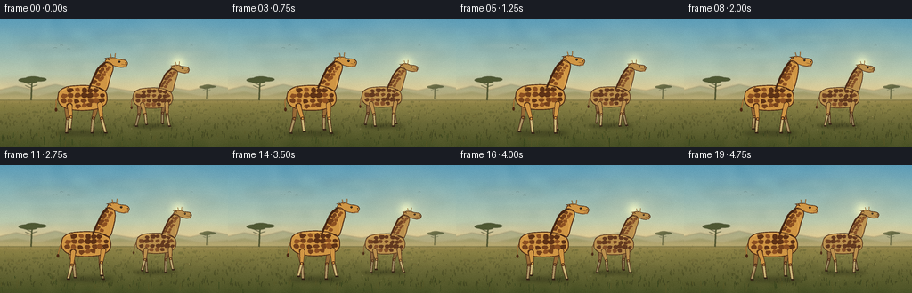
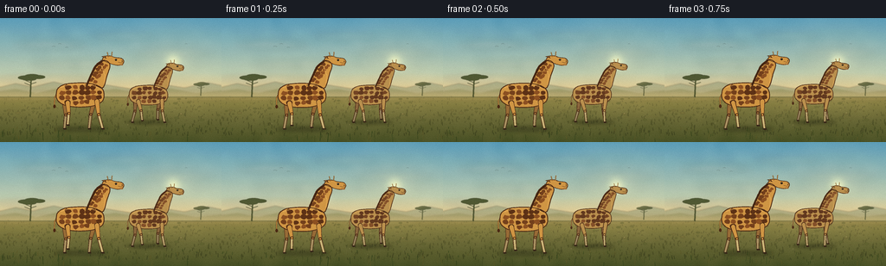

CODING AGENTS AS PIXEL WORLD MODELS
traex/DeepSeek-V4.1-Flash · instance_preservation_0011
点击播放 · 原生 RGB 像素
逐轮保存的候选
回放视频、检查图与代码变化。
每份候选均可单独播放。实际图片检查记录在下方工具轨迹中。
候选 01播放与检查图
点击播放 · 原生 RGB 像素
展开代码变化
--- 上一保存版本
+++ 本次保存版本
@@ -0,0 +1,618 @@
+from __future__ import annotations
+
+import math
+import random
+from pathlib import Path
+
+import cv2
+import numpy as np
+from PIL import Image, ImageChops, ImageDraw, ImageEnhance, ImageFilter
+
+import artifact_io
+
+
+WIDTH = 256
+HEIGHT = 144
+FPS = 4
+FRAME_COUNT = 20
+SUPERSAMPLE = 4
+RW = WIDTH * SUPERSAMPLE
+RH = HEIGHT * SUPERSAMPLE
+HORIZON = 91.0
+GROUND = 128.0
+
+
+def scaled(value: float) -> int:
+ return int(round(value * SUPERSAMPLE))
+
+
+def point_xy(point: tuple[float, float]) -> tuple[int, int]:
+ return scaled(point[0]), scaled(point[1])
+
+
+def polygon(draw: ImageDraw.ImageDraw, points, fill, outline=None, width=0):
+ draw.polygon([point_xy(p) for p in points], fill=fill, outline=outline, width=scaled(width))
+
+
+def ellipse(draw: ImageDraw.ImageDraw, box, fill, outline=None, width=0):
+ draw.ellipse(tuple(scaled(v) for v in box), fill=fill, outline=outline, width=scaled(width))
+
+
+def line(draw: ImageDraw.ImageDraw, points, fill, width, joint="curve"):
+ draw.line([point_xy(p) for p in points], fill=fill, width=max(1, scaled(width)), joint=joint)
+
+
+def lerp_color(a, b, t):
+ t = max(0.0, min(1.0, t))
+ return tuple(int(round(a[i] + (b[i] - a[i]) * t)) for i in range(3))
+
+
+def catmull_rom(points, samples_per_segment=10, closed=False):
+ """Return a smooth curve through a small polygon of control points."""
+ points = np.asarray(points, dtype=np.float32)
+ if len(points) < 3:
+ return [tuple(p) for p in points]
+ if closed:
+ p = np.vstack([points[-1], points, points[0], points[1]])
+ else:
+ p = np.vstack([points[0], points, points[-1]])
+ curve = []
+ for i in range(1, len(p) - 2):
+ p0, p1, p2, p3 = p[i - 1], p[i], p[i + 1], p[i + 2]
+ for j in range(samples_per_segment):
+ t = j / samples_per_segment
+ t2, t3 = t * t, t * t * t
+ q = 0.5 * (
+ (2 * p1)
+ + (-p0 + p2) * t
+ + (2 * p0 - 5 * p1 + 4 * p2 - p3) * t2
+ + (-p0 + 3 * p1 - 3 * p2 + p3) * t3
+ )
+ curve.append(tuple(float(v) for v in q))
+ if not closed:
+ curve.append(tuple(float(v) for v in points[-1]))
+ return curve
+
+
+def make_background():
+ rng = np.random.default_rng(20261110)
+ yy = np.arange(RH, dtype=np.float32)[:, None] / SUPERSAMPLE
+ sky_top = np.array([95, 157, 183], dtype=np.float32)
+ sky_mid = np.array([186, 199, 173], dtype=np.float32)
+ sky_warm = np.array([240, 203, 139], dtype=np.float32)
+ ground_far = np.array([156, 143, 83], dtype=np.float32)
+ ground_near = np.array([75, 82, 43], dtype=np.float32)
+
+ arr = np.zeros((RH, RW, 3), dtype=np.float32)
+ for y in range(RH):
+ yl = y / SUPERSAMPLE
+ if yl < HORIZON:
+ if yl < 63:
+ color = sky_top + (sky_mid - sky_top) * (yl / 63.0)
+ else:
+ color = sky_mid + (sky_warm - sky_mid) * ((yl - 63) / (HORIZON - 63))
+ else:
+ d = min(1.0, (yl - HORIZON) / (HEIGHT - HORIZON))
+ color = ground_far + (ground_near - ground_far) * (d**0.75)
+ arr[y, :, :] = color
+
+ # Broad, smooth color variation gives the image a painted rather than flat look.
+ coarse = rng.normal(0.0, 1.0, (12, 22)).astype(np.float32)
+ coarse_img = Image.fromarray(((coarse + 2.5) * 51).clip(0, 255).astype(np.uint8), "L")
+ coarse_img = coarse_img.resize((RW, RH), Image.Resampling.BICUBIC)
+ coarse = (np.asarray(coarse_img, dtype=np.float32) - 127.5) / 127.5
+ arr += coarse[:, :, None] * np.array([5.0, 4.0, 3.0], dtype=np.float32)
+
+ # Sun and its wide, soft late-afternoon glow.
+ sx, sy = 200.0 * SUPERSAMPLE, 50.0 * SUPERSAMPLE
+ xgrid = np.arange(RW, dtype=np.float32)[None, :]
+ ygrid = np.arange(RH, dtype=np.float32)[:, None]
+ dist2 = (xgrid - sx) ** 2 + (ygrid - sy) ** 2
+ glow = np.exp(-dist2 / (2 * (31.0 * SUPERSAMPLE) ** 2))
+ sun = np.exp(-dist2 / (2 * (6.0 * SUPERSAMPLE) ** 2))
+ arr = arr * (1.0 - 0.11 * glow[:, :, None]) + np.array([255, 224, 161]) * 0.11 * glow[:, :, None]
+ arr += sun[:, :, None] * np.array([55, 43, 21], dtype=np.float32)
+
+ image = Image.fromarray(np.clip(arr, 0, 255).astype(np.uint8), "RGB").convert("RGBA")
+
+ # Soft clouds/haze, kept high enough not to compete with the giraffes.
+ cloud = Image.new("RGBA", (RW, RH), (0, 0, 0, 0))
+ cd = ImageDraw.Draw(cloud)
+ for box, alpha in [
+ ((16, 26, 101, 35), 30),
+ ((104, 17, 179, 25), 22),
+ ((36, 49, 143, 57), 25),
+ ((156, 36, 245, 44), 20),
+ ((0, 67, 109, 76), 32),
+ ]:
+ ellipse(cd, box, (246, 220, 182, alpha))
+ cloud = cloud.filter(ImageFilter.GaussianBlur(scaled(4.0)))
+ image.alpha_composite(cloud)
+
+ # Layered distant hills create depth without adding visual noise.
+ hills = Image.new("RGBA", (RW, RH), (0, 0, 0, 0))
+ hd = ImageDraw.Draw(hills)
+ far_hills = [
+ (-8, 91), (-8, 82), (18, 76), (38, 80), (62, 74), (91, 81),
+ (119, 77), (150, 82), (182, 76), (213, 81), (240, 75), (264, 80), (264, 91),
+ ]
+ polygon(hd, far_hills, (125, 142, 117, 115))
+ mid_hills = [
+ (-8, 92), (-8, 86), (18, 82), (42, 87), (73, 80), (102, 86),
+ (134, 82), (164, 88), (195, 81), (226, 87), (264, 83), (264, 92),
+ ]
+ polygon(hd, mid_hills, (108, 122, 83, 130))
+ hills = hills.filter(ImageFilter.GaussianBlur(scaled(0.7)))
+ image.alpha_composite(hills)
+
+ # Thin warm dust line at the horizon.
+ haze = Image.new("RGBA", (RW, RH), (0, 0, 0, 0))
+ zd = ImageDraw.Draw(haze)
+ zd.rectangle((0, scaled(85), RW, scaled(95)), fill=(244, 208, 148, 34))
+ haze = haze.filter(ImageFilter.GaussianBlur(scaled(2.2)))
+ image.alpha_composite(haze)
+
+ draw_acacia(image, 35, 91.5, 0.95, (65, 73, 39, 220))
+ draw_acacia(image, 232, 90.0, 0.56, (68, 76, 42, 175))
+
+ # Mid-ground grass and scrub.
+ field = Image.new("RGBA", (RW, RH), (0, 0, 0, 0))
+ fd = ImageDraw.Draw(field)
+ for _ in range(390):
+ x = rng.uniform(0, WIDTH)
+ y = rng.uniform(HORIZON + 0.5, 137)
+ depth = (y - HORIZON) / (HEIGHT - HORIZON)
+ length = rng.uniform(1.2, 3.8) * (0.45 + depth)
+ lean = rng.uniform(-0.8, 0.8)
+ color = lerp_color((117, 112, 61), (53, 63, 31), depth)
+ alpha = int(105 + 80 * depth)
+ line(fd, [(x, y), (x + lean, y - length)], (*color, alpha), 0.35 + 0.25 * depth)
+ for _ in range(42):
+ x = rng.uniform(0, WIDTH)
+ y = rng.uniform(HORIZON + 2, 119)
+ radius = rng.uniform(0.8, 2.7)
+ color = rng.choice([(103, 104, 54), (89, 94, 47), (121, 111, 61)])
+ ellipse(fd, (x - radius, y - radius * 0.45, x + radius, y + radius * 0.45), (*color, 100))
+ field = field.filter(ImageFilter.GaussianBlur(scaled(0.18)))
+ image.alpha_composite(field)
+
+ # A few small birds make the sky feel inhabited while remaining unobtrusive.
+ bird = Image.new("RGBA", (RW, RH), (0, 0, 0, 0))
+ bd = ImageDraw.Draw(bird)
+ for x, y, s in [(62, 33, 1.0), (69, 30, 0.8), (77, 34, 0.72), (215, 30, 0.65)]:
+ line(bd, [(x - 2.1 * s, y), (x, y - 0.8 * s), (x + 2.1 * s, y)], (53, 65, 61, 150), 0.35)
+ image.alpha_composite(bird)
+ return image
+
+
+def draw_acacia(image: Image.Image, x: float, ground: float, scale: float, color):
+ layer = Image.new("RGBA", (RW, RH), (0, 0, 0, 0))
+ draw = ImageDraw.Draw(layer)
+ top_y = ground - 24 * scale
+ line(draw, [(x, ground), (x + 0.7 * scale, top_y + 6 * scale), (x + 1.7 * scale, top_y)], color, 1.6 * scale)
+ branches = [
+ [(x + 1.2 * scale, top_y + 7 * scale), (x - 9 * scale, top_y + 2.5 * scale)],
+ [(x + 1.5 * scale, top_y + 4 * scale), (x + 10 * scale, top_y + 0.5 * scale)],
+ [(x + 0.8 * scale, top_y + 10 * scale), (x - 7 * scale, top_y + 7 * scale)],
+ [(x + 1.5 * scale, top_y + 8 * scale), (x + 7 * scale, top_y + 6 * scale)],
+ ]
+ for branch in branches:
+ line(draw, branch, color, 0.7 * scale)
+ canopy_boxes = [
+ (x - 15 * scale, top_y - 2 * scale, x + 3 * scale, top_y + 3 * scale),
+ (x - 8 * scale, top_y - 4 * scale, x + 12 * scale, top_y + 2.5 * scale),
+ (x + 2 * scale, top_y - 2.5 * scale, x + 18 * scale, top_y + 2 * scale),
+ (x - 10 * scale, top_y + 0.4 * scale, x + 7 * scale, top_y + 4 * scale),
+ ]
+ for box in canopy_boxes:
+ ellipse(draw, box, color)
+ layer = layer.filter(ImageFilter.GaussianBlur(scaled(0.18)))
+ image.alpha_composite(layer)
+
+
+def tapered_segment(draw, p1, p2, width1, width2, fill):
+ x1, y1 = point_xy(p1)
+ x2, y2 = point_xy(p2)
+ dx, dy = x2 - x1, y2 - y1
+ length = math.hypot(dx, dy)
+ if length < 1e-5:
+ return
+ nx, ny = -dy / length, dx / length
+ w1, w2 = width1 * SUPERSAMPLE / 2, width2 * SUPERSAMPLE / 2
+ points = [
+ (x1 + nx * w1, y1 + ny * w1),
+ (x2 + nx * w2, y2 + ny * w2),
+ (x2 - nx * w2, y2 - ny * w2),
+ (x1 - nx * w1, y1 - ny * w1),
+ ]
+ draw.polygon(points, fill=fill)
+ r1, r2 = max(1, int(w1)), max(1, int(w2))
+ draw.ellipse((x1 - r1, y1 - r1, x1 + r1, y1 + r1), fill=fill)
+ draw.ellipse((x2 - r2, y2 - r2, x2 + r2, y2 + r2), fill=fill)
+
+
+def draw_giraffe_shadow(canvas: Image.Image, cx: float, ground: float, scale: float, phase: float):
+ layer = Image.new("RGBA", (RW, RH), (0, 0, 0, 0))
+ draw = ImageDraw.Draw(layer)
+ pulse = 0.7 * math.sin(2 * math.pi * phase)
+ box = (
+ cx - 31 * scale + pulse,
+ ground - 2.7 * scale,
+ cx + 31 * scale + pulse,
+ ground + 2.5 * scale,
+ )
+ ellipse(draw, box, (37, 39, 24, 98))
+ layer = layer.filter(ImageFilter.GaussianBlur(scaled(2.3 * scale)))
+ canvas.alpha_composite(layer)
+
+
+def leg_pose(hip, phase, stride, ground, scale, front):
+ angle = 2 * math.pi * phase
+ foot_x = hip[0] + stride * math.sin(angle)
+ lift = max(0.0, math.cos(angle)) * 4.3 * scale
+ foot_y = ground - lift
+ travel_x = foot_x - hip[0]
+ travel_y = foot_y - hip[1]
+ knee_x = hip[0] + travel_x * 0.49 + (-1.2 if front else 1.4) * scale
+ knee_y = hip[1] + travel_y * 0.50 - 0.2 * scale
+ return (foot_x, foot_y), (knee_x, knee_y)
+
+
+def draw_leg(draw, hip, foot, knee, scale, base, lower, outline, far=False):
+ outline_color = outline if not far else (76, 47, 29)
+ upper_w = 4.7 * scale
+ lower_w = 2.8 * scale
+ tapered_segment(draw, hip, knee, upper_w + 1.3, lower_w + 1.1, outline_color)
+ tapered_segment(draw, hip, knee, upper_w, lower_w, base)
+ tapered_segment(draw, knee, foot, lower_w + 1.0, lower_w * 0.75 + 0.8, outline_color)
+ tapered_segment(draw, knee, foot, lower_w * 0.80, lower_w * 0.58, lower)
+ ellipse(draw, (knee[0] - 1.55 * scale, knee[1] - 1.55 * scale,
+ knee[0] + 1.55 * scale, knee[1] + 1.55 * scale), outline_color)
+ ellipse(draw, (knee[0] - 0.95 * scale, knee[1] - 0.95 * scale,
+ knee[0] + 0.95 * scale, knee[1] + 0.95 * scale), base)
+ hoof = [
+ (foot[0] - 1.6 * scale, foot[1] - 0.2 * scale),
+ (foot[0] + 2.1 * scale, foot[1] - 0.2 * scale),
+ (foot[0] + 2.35 * scale, foot[1] + 1.15 * scale),
+ (foot[0] - 1.25 * scale, foot[1] + 1.15 * scale),
+ ]
+ polygon(draw, hoof, (54, 40, 27))
+
+
+def body_outline(scale, sway, nod):
+ torso = [
+ (-27, -1), (-25, -8), (-18, -12.5), (-8, -14), (5, -14.3), (17, -12.5),
+ (25, -8.5), (28, -2), (27, 5.5), (22, 10), (13, 13), (0, 14),
+ (-12, 13), (-21, 10), (-26, 5),
+ ]
+ neck = [
+ (8, -11), (12, -22), (18, -34), (25 + sway, -41 + nod), (31 + sway, -40 + nod),
+ (34 + sway, -35 + nod), (32, -24), (27, -9), (19, -11),
+ ]
+ head = [
+ (25 + sway, -42 + nod), (29 + sway, -46 + nod), (35 + sway, -46.2 + nod),
+ (40 + sway, -44.5 + nod), (47 + sway, -43.5 + nod), (50 + sway, -40.5 + nod),
+ (49 + sway, -37.2 + nod), (45 + sway, -35.3 + nod), (39 + sway, -36 + nod),
+ (33 + sway, -38 + nod), (28 + sway, -40 + nod),
+ ]
+ return torso, neck, head
+
+
+def draw_giraffe(canvas, *, cx, ground, scale, phase, phase_offset, colors, seed):
+ rng = random.Random(seed)
+ sway = 1.25 * scale * math.sin(2 * math.pi * (phase + 0.13))
+ nod = 0.75 * scale * math.sin(2 * math.pi * (phase + 0.32))
+ bob = 0.75 * scale * math.sin(4 * math.pi * phase + 0.6)
+ cy = ground - 39.0 * scale + bob
+
+ def tr(p):
+ return (cx + p[0] * scale, cy + p[1] * scale)
+
+ torso_ctrl, neck_ctrl, head_ctrl = body_outline(scale, sway, nod)
+ torso_curve = [tr(p) for p in catmull_rom(torso_ctrl, 9, closed=True)]
+ neck_curve = [tr(p) for p in catmull_rom(neck_ctrl, 9, closed=False)]
+ head_curve = [tr(p) for p in catmull_rom(head_ctrl, 8, closed=True)]
+
+ # Far legs sit behind the torso and use a slightly cooler, darker palette.
+ far_layer = Image.new("RGBA", (RW, RH), (0, 0, 0, 0))
+ far_draw = ImageDraw.Draw(far_layer)
+ far_hips = {
+ "hind": tr((-17.5, 8.0)),
+ "front": tr((17.0, 7.0)),
+ }
+ far_phases = {
+ "hind": phase + phase_offset + 0.50,
+ "front": phase + phase_offset + 0.75,
+ }
+ for name in ("hind", "front"):
+ foot, knee = leg_pose(
+ far_hips[name], far_phases[name], 6.0 * scale, ground, scale, name == "front"
+ )
+ draw_leg(
+ far_draw, far_hips[name], foot, knee, scale,
+ colors["far_base"], colors["far_lower"], colors["outline"], far=True,
+ )
+ canvas.alpha_composite(far_layer)
+
+ # Tail is behind the body; the tuft lags the body's gentle walk rhythm.
+ tail = Image.new("RGBA", (RW, RH), (0, 0, 0, 0))
+ td = ImageDraw.Draw(tail)
+ tail_sway = 1.3 * scale * math.sin(2 * math.pi * phase + 0.7)
+ tail_points = [tr((-25.0, -5.0)), tr((-29.0, 3.0)), tr((-30.0 + tail_sway, 12.0))]
+ line(td, tail_points, colors["outline"], 1.25 * scale)
+ line(td, tail_points, colors["base"], 0.72 * scale)
+ ellipse(td, (tr((-31.3 + tail_sway, 11.0)) + tr((-28.6 + tail_sway, 15.0))),
+ colors["outline"])
+ canvas.alpha_composite(tail)
+
+ body_mask = Image.new("L", (RW, RH), 0)
+ md = ImageDraw.Draw(body_mask)
+ md.polygon([point_xy(p) for p in torso_curve], fill=255)
+ md.polygon([point_xy(p) for p in neck_curve], fill=255)
+ md.polygon([point_xy(p) for p in head_curve], fill=255)
+
+ body = Image.new("RGBA", (RW, RH), (0, 0, 0, 0))
+ bd = ImageDraw.Draw(body)
+ bd.polygon([point_xy(p) for p in torso_curve], fill=colors["base"])
+ bd.polygon([point_xy(p) for p in neck_curve], fill=colors["base"])
+ bd.polygon([point_xy(p) for p in head_curve], fill=colors["base"])
+
+ # Large, irregular chestnut spots clipped to the giraffe's silhouette.
+ spots = Image.new("RGBA", (RW, RH), (0, 0, 0, 0))
+ sd = ImageDraw.Draw(spots)
+
+ def add_spot(center, radius, tint):
+ center = tr(center)
+ count = rng.randint(7, 10)
+ points = []
+ phase_jitter = rng.uniform(0, 0.3)
+ for k in range(count):
+ angle = 2 * math.pi * k / count + phase_jitter
+ rr = radius * scale * rng.uniform(0.73, 1.16)
+ points.append((center[0] + math.cos(angle) * rr, center[1] + math.sin(angle) * rr * 0.82))
+ sd.polygon([point_xy(p) for p in points], fill=tint)
+
+ for row, y in enumerate((-9.2, -3.2, 2.9, 8.4)):
+ for col, x in enumerate((-20.0, -12.7, -5.3, 2.1, 9.4, 16.7, 22.0)):
+ if (row == 0 and col in (0, 6)) or (row == 3 and col in (0, 5, 6)):
+ continue
+ jitter_x = rng.uniform(-1.2, 1.2)
+ jitter_y = rng.uniform(-0.8, 0.8)
+ radius = rng.uniform(3.0, 4.2)
+ tint = rng.choice([colors["spot"], colors["spot_light"], colors["spot_dark"]])
+ add_spot((x + jitter_x, y + jitter_y), radius, tint)
+
+ # Neck spots follow its slanted centerline and become smaller toward the head.
+ for k in range(7):
+ f = (k + 0.25) / 7.2
+ x = 15.0 + f * (14.0 + sway)
+ y = -16.0 + f * (-23.0 + nod)
+ for side in (-1, 1):
+ add_spot((x + side * 2.6 * scale, y + rng.uniform(-1.2, 1.2)),
+ rng.uniform(1.8, 2.8), colors["spot"] if side < 0 else colors["spot_light"])
+
+ spots.putalpha(ImageChops.multiply(spots.getchannel("A"), body_mask))
+ body.alpha_composite(spots)
+
+ # A restrained top-light and under-body shade model the cylindrical torso.
+ shade = Image.new("RGBA", (RW, RH), (0, 0, 0, 0))
+ shd = ImageDraw.Draw(shade)
+ polygon(shd, [tr(p) for p in [(-24, 9), (-15, 14.1), (0, 15.5), (18, 12.6), (27, 7.2), (22, 11.5), (7, 15.8), (-12, 14.5), (-23, 11)]],
+ (49, 39, 27, 80))
+ line(shd, [tr((-22, -8.8)), tr((-12, -12.2)), tr((0, -13.2)), tr((13, -12.2)), tr((23, -8.4))],
+ (246, 195, 111, 105), 1.35 * scale)
+ line(shd, [tr((24 + sway, -35 + nod)), tr((28 + sway, -24 + nod)), tr((28, -12))],
+ (244, 193, 111, 85), 0.9 * scale)
+ shade.putalpha(ImageChops.multiply(shade.getchannel("A"), body_mask))
+ body.alpha_composite(shade)
+
+ # Crisp silhouette edges.
+ line(bd, torso_curve + [torso_curve[0]], colors["outline"], 0.95 * scale)
+ line(bd, neck_curve, colors["outline"], 0.9 * scale)
+ line(bd, head_curve + [head_curve[0]], colors["outline"], 0.85 * scale)
+
+ # Mane along the back of the neck.
+ mane_points = [tr((8.2, -11.5)), tr((12.5, -22.0)), tr((18.5, -33.5)), tr((25.5 + sway, -40.8 + nod))]
+ line(bd, mane_points, colors["mane"], 2.0 * scale)
+ for k in range(7):
+ f = k / 6
+ p = (
+ mane_points[0][0] + (mane_points[-1][0] - mane_points[0][0]) * f,
+ mane_points[0][1] + (mane_points[-1][1] - mane_points[0][1]) * f,
+ )
+ line(bd, [(p[0] - 0.2 * scale, p[1]), (p[0] - 2.3 * scale, p[1] - 0.5 * scale)],
+ colors["mane"], 0.65 * scale)
+
+ # Ossicones and ears.
+ ossicles = [
+ ((32.3 + sway, -45.2 + nod), (31.0 + sway, -50.5 + nod)),
+ ((36.1 + sway, -45.5 + nod), (36.5 + sway, -51.2 + nod)),
+ ]
+ for base, tip in ossicles:
+ line(bd, [tr(base), tr(tip)], colors["outline"], 1.05 * scale)
+ line(bd, [tr(base), tr(tip)], colors["base"], 0.55 * scale)
+ ellipse(bd, (tip[0] - 1.25 * scale, tip[1] - 1.1 * scale,
+ tip[0] + 1.25 * scale, tip[1] + 1.1 * scale), colors["outline"])
+ ellipse(bd, (tip[0] - 0.72 * scale, tip[1] - 0.66 * scale,
+ tip[0] + 0.72 * scale, tip[1] + 0.66 * scale), colors["base"])
+ ear_tip = (24.0 + sway, -45.5 + nod)
+ ear_base = (30.2 + sway, -43.2 + nod)
+ polygon(bd, [tr(ear_base), tr((28.0 + sway, -46.3 + nod)), tr(ear_tip),
+ tr((27.8 + sway, -44.2 + nod))], colors["base"], colors["outline"], 0.65 * scale)
+
+ # Facial features: eye, jaw, muzzle and nostril.
+ eye = tr((41.0 + sway, -41.8 + nod))
+ ellipse(bd, (eye[0] - 1.15 * scale, eye[1] - 1.1 * scale,
+ eye[0] + 1.15 * scale, eye[1] + 1.1 * scale), (47, 34, 24))
+ ellipse(bd, (eye[0] - 0.62 * scale, eye[1] - 0.62 * scale,
+ eye[0] + 0.62 * scale, eye[1] + 0.62 * scale), (18, 16, 13))
+ ellipse(bd, (eye[0] - 0.35 * scale, eye[1] - 0.46 * scale,
+ eye[0] + 0.15 * scale, eye[1] - 0.02 * scale), (231, 217, 177))
+ line(bd, [tr((43.5 + sway, -39.0 + nod)), tr((47.0 + sway, -38.3 + nod)),
+ tr((49.0 + sway, -39.0 + nod))], colors["outline"], 0.55 * scale)
+ nostril = tr((48.2 + sway, -40.2 + nod))
+ ellipse(bd, (nostril[0] - 0.55 * scale, nostril[1] - 0.45 * scale,
+ nostril[0] + 0.55 * scale, nostril[1] + 0.45 * scale), (55, 38, 28))
+ polygon(bd, [tr((45.0 + sway, -36.6 + nod)), tr((49.3 + sway, -36.8 + nod)),
+ tr((48.7 + sway, -35.1 + nod)), tr((43.8 + sway, -35.4 + nod))],
+ colors["muzzle"])
+
+ canvas.alpha_composite(body)
+
+ # Near legs overlap the torso just enough to sell the side-on walking gait.
+ near_layer = Image.new("RGBA", (RW, RH), (0, 0, 0, 0))
+ nd = ImageDraw.Draw(near_layer)
+ near_hips = {
+ "hind": tr((-13.8, 8.8)),
+ "front": tr((20.0, 7.2)),
+ }
+ near_phases = {
+ "hind": phase + phase_offset + 0.00,
+ "front": phase + phase_offset + 0.25,
+ }
+ for name in ("hind", "front"):
+ foot, knee = leg_pose(
+ near_hips[name], near_phases[name], 6.4 * scale, ground, scale, name == "front"
+ )
+ draw_leg(
+ nd, near_hips[name], foot, knee, scale,
+ colors["base"], colors["lower"], colors["outline"], far=False,
+ )
+ canvas.alpha_composite(near_layer)
+
+
+def foreground_grass(canvas: Image.Image, frame_index: int):
+ layer = Image.new("RGBA", (RW, RH), (0, 0, 0, 0))
+ draw = ImageDraw.Draw(layer)
+ rng = random.Random(991 + frame_index * 13)
+ for _ in range(66):
+ x = rng.uniform(-2, WIDTH + 2)
+ y = rng.uniform(126, 145)
+ h = rng.uniform(3.5, 10.5) * ((y - 120) / 24)
+ sway = 0.55 * math.sin(frame_index * 0.9 + x * 0.11)
+ base_color = rng.choice([(52, 66, 31), (64, 73, 35), (77, 82, 41), (91, 87, 43)])
+ line(draw, [(x, y), (x + sway + rng.uniform(-0.7, 0.7), y - h)],
+ (*base_color, rng.randint(170, 235)), rng.uniform(0.38, 0.8))
+ if rng.random() < 0.35:
+ line(draw, [(x, y), (x + sway + rng.uniform(1.1, 2.6), y - h * 0.65)],
+ (*base_color, 170), 0.35)
+ canvas.alpha_composite(layer)
+
+
+def dust_motes(canvas: Image.Image, frame_index: int):
+ layer = Image.new("RGBA", (RW, RH), (0, 0, 0, 0))
+ draw = ImageDraw.Draw(layer)
+ rng = random.Random(770)
+ for i in range(24):
+ x0 = rng.uniform(56, 220)
+ y0 = rng.uniform(102, 132)
+ x = (x0 + frame_index * (0.20 + 0.05 * (i % 3))) % 270 - 7
+ y = y0 + 0.75 * math.sin(frame_index * 0.6 + i)
+ r = rng.uniform(0.18, 0.55)
+ alpha = rng.randint(28, 66)
+ ellipse(draw, (x - r, y - r, x + r, y + r), (232, 204, 148, alpha))
+ canvas.alpha_composite(layer)
+
+
+def render_frame(background: Image.Image, frame_index: int):
+ canvas = background.copy()
+ t = frame_index / FRAME_COUNT
+
+ # The two animals move at a measured pace, with the farther one slightly ahead.
+ giraffe_1_phase = frame_index / 16.0
+ giraffe_2_phase = frame_index / 16.0 + 0.08
+ x1 = 92.0 + 7.5 * t
+ x2 = 171.0 + 7.0 * t
+ ground1 = GROUND + 0.25 * math.sin(2 * math.pi * giraffe_1_phase)
+ ground2 = 120.3 + 0.2 * math.sin(2 * math.pi * giraffe_2_phase + 0.5)
+
+ draw_giraffe_shadow(canvas, x1 + 1.0, ground1 + 0.6, 1.0, giraffe_1_phase)
+ draw_giraffe_shadow(canvas, x2 + 0.5, ground2 + 0.4, 0.81, giraffe_2_phase)
+
+ far_colors = {
+ "base": (184, 145, 83),
+ "lower": (188, 169, 119),
+ "far_base": (137, 105, 66),
+ "far_lower": (153, 137, 100),
+ "spot": (115, 72, 42),
+ "spot_light": (132, 84, 48),
+ "spot_dark": (99, 61, 37),
+ "outline": (80, 51, 31),
+ "mane": (77, 47, 29),
+ "muzzle": (151, 108, 64),
+ }
+ near_colors = {
+ "base": (205, 151, 75),
+ "lower": (202, 181, 125),
+ "far_base": (151, 110, 61),
+ "far_lower": (170, 148, 103),
+ "spot": (116, 68, 34),
+ "spot_light": (139, 83, 41),
+ "spot_dark": (94, 54, 28),
+ "outline": (77, 46, 26),
+ "mane": (70, 42, 25),
+ "muzzle": (159, 111, 62),
+ }
+
+ draw_giraffe(
+ canvas, cx=x2, ground=ground2, scale=0.81, phase=giraffe_2_phase,
+ phase_offset=0.08, colors=far_colors, seed=241,
+ )
+ draw_giraffe(
+ canvas, cx=x1, ground=ground1, scale=1.0, phase=giraffe_1_phase,
+ phase_offset=0.0, colors=near_colors, seed=913,
+ )
+
+ dust_motes(canvas, frame_index)
+ foreground_grass(canvas, frame_index)
+ return canvas.convert("RGB")
+
+
+def save_video(frames, output_dir: Path):
+ path = output_dir / "video.mp4"
+ writer = cv2.VideoWriter(
+ str(path), cv2.VideoWriter_fourcc(*"mp4v"), FPS, (WIDTH, HEIGHT)
+ )
+ if writer.isOpened():
+ for frame in frames:
+ writer.write(cv2.cvtColor(frame, cv2.COLOR_RGB2BGR))
+ writer.release()
+ else:
+ writer.release()
+ raise RuntimeError("OpenCV could not create the MP4 output")
+
+ gif_frames = [Image.fromarray(frame).convert("P", palette=Image.Palette.ADAPTIVE, colors=128)
+ for frame in frames]
+ gif_frames[0].save(
+ output_dir / "preview.gif", save_all=True, append_images=gif_frames[1:],
+ duration=round(1000 / FPS), loop=0, optimize=False,
+ )
+
+
+def main():
+ output_dir = Path(__file__).resolve().parent
+ background = make_background()
+ frames = []
+ for index in range(FRAME_COUNT):
+ frame = render_frame(background, index)
+ frame = frame.filter(ImageFilter.GaussianBlur(0.22))
+ frame = frame.resize((WIDTH, HEIGHT), Image.Resampling.LANCZOS)
+ frame = ImageEnhance.Contrast(frame).enhance(1.035)
+ frame = ImageEnhance.Color(frame).enhance(1.04)
+ array = np.asarray(frame, dtype=np.uint8)
+
+ # A very light final grain prevents banding in the sky gradient.
+ rng = np.random.default_rng(5000 + index)
+ grain = rng.normal(0.0, 1.15, (HEIGHT, WIDTH, 1))
+ array = np.clip(array.astype(np.float32) + grain, 0, 255).astype(np.uint8)
+ frames.append(array)
+
+ frames = np.stack(frames)
+ assert frames.shape == (FRAME_COUNT, HEIGHT, WIDTH, 3)
+ artifact_io.save(frames, output_dir)
+ save_video(frames, output_dir)
+ print(f"Wrote {FRAME_COUNT} frames, video.mp4, preview.gif and player artifacts to {output_dir}")
+
+
+if __name__ == "__main__":
+ main()
候选 02播放与检查图
点击播放 · 原生 RGB 像素


展开代码变化
--- 上一保存版本
+++ 本次保存版本
@@ -98,7 +98,7 @@
# Broad, smooth color variation gives the image a painted rather than flat look.
coarse = rng.normal(0.0, 1.0, (12, 22)).astype(np.float32)
- coarse_img = Image.fromarray(((coarse + 2.5) * 51).clip(0, 255).astype(np.uint8), "L")
+ coarse_img = Image.fromarray(((coarse + 2.5) * 51).clip(0, 255).astype(np.uint8))
coarse_img = coarse_img.resize((RW, RH), Image.Resampling.BICUBIC)
coarse = (np.asarray(coarse_img, dtype=np.float32) - 127.5) / 127.5
arr += coarse[:, :, None] * np.array([5.0, 4.0, 3.0], dtype=np.float32)
@@ -113,7 +113,7 @@
arr = arr * (1.0 - 0.11 * glow[:, :, None]) + np.array([255, 224, 161]) * 0.11 * glow[:, :, None]
arr += sun[:, :, None] * np.array([55, 43, 21], dtype=np.float32)
- image = Image.fromarray(np.clip(arr, 0, 255).astype(np.uint8), "RGB").convert("RGBA")
+ image = Image.fromarray(np.clip(arr, 0, 255).astype(np.uint8)).convert("RGBA")
# Soft clouds/haze, kept high enough not to compete with the giraffes.
cloud = Image.new("RGBA", (RW, RH), (0, 0, 0, 0))
@@ -388,7 +388,7 @@
x = 15.0 + f * (14.0 + sway)
y = -16.0 + f * (-23.0 + nod)
for side in (-1, 1):
- add_spot((x + side * 2.6 * scale, y + rng.uniform(-1.2, 1.2)),
+ add_spot((x + side * 2.6, y + rng.uniform(-1.2, 1.2)),
rng.uniform(1.8, 2.8), colors["spot"] if side < 0 else colors["spot_light"])
spots.putalpha(ImageChops.multiply(spots.getchannel("A"), body_mask))
可观测工具轨迹
实际执行的命令与返回图片。
命令 1exit 0
/bin/bash -c "pwd && rg --files -g 'prompt.txt' -g 'GENERATION_RULES.md' -g 'task_spec.json' -g '"'!**/.git/**'"'"
命令 2exit 0
/bin/bash -c "git status --short && find . -maxdepth 2 -type f | sort | sed -n '1,200p'"
命令 3exit 0
/bin/bash -c "ffmpeg -version | head -n 3; python3 --version; python3 - <<'PY'
mods=['numpy','PIL','cv2','imageio','matplotlib','scipy']
for m in mods:
try:
x=__import__(m)
print(m, getattr(x,'__version__','ok'))
except Exception as e:
print(m, 'MISSING', e)
PY"命令 4exit 0
/bin/bash -c 'cat prompt.txt'
命令 5exit 0
/bin/bash -c 'cat GENERATION_RULES.md'
命令 6exit 0
/bin/bash -c 'cat task_spec.json'
命令 7exit 0
/bin/bash -c "sed -n '1,240p' artifact_io.py && printf '\\n--- PLAYER ---\\n' && sed -n '1,240p' player_template.html"
命令 8exit 1
/bin/bash -c 'MPLCONFIGDIR=.tmp/mpl python3 generate.py'
命令 9exit 0
/bin/bash -c 'MPLCONFIGDIR=.tmp/mpl python3 generate.py'
命令 10exit 0
/bin/bash -c "ls -lh frames/*.png video.mp4 preview.gif inspection.png transition_check.png pixels.npz index.html && python3 - <<'PY'
from PIL import Image
import numpy as np
for name in ['frames/00.png','frames/05.png','frames/10.png','frames/15.png','frames/19.png']:
im=np.asarray(Image.open(name).convert('RGB'))
print(name, im.shape, 'mean', np.round(im.mean((0,1)),1), 'std', round(float(im.std()),1), 'unique', len(np.unique(im.reshape(-1,3),axis=0)))
PY"命令 11exit 0
/bin/bash -c 'command -v chafa || true; command -v viu || true; command -v img2txt || true; command -v jp2 || true; command -v ffprobe || true; command -v mediainfo || true'
命令 12exit 0
/bin/bash -c "python3 - <<'PY'
from PIL import Image, ImageOps, ImageFilter
import numpy as np
chars='@%#*+=-:. '
for fn in ['frames/00.png','frames/04.png','frames/08.png','frames/12.png','frames/16.png']:
im=Image.open(fn).convert('L').resize((96,40))
a=np.asarray(im)
lo,hi=np.percentile(a,[2,98]); a=np.clip((a-lo)/(hi-lo),0,1)
print('\\n',fn)
for row in a:
print(''.join(chars[min(len(chars)-1,int(v*(len(chars)-1)))] for v in row))
PY"命令 13exit 0
/bin/bash -c 'MPLCONFIGDIR=.tmp/mpl python3 generate.py'
命令 14exit 0
/bin/bash -c "python3 - <<'PY'
from pathlib import Path
import json, cv2, numpy as np
from PIL import Image
spec=json.loads(Path('task_spec.json').read_text())
files=sorted(Path('frames').glob('*.png'))
assert len(files)==spec['frames'], len(files)
frames=np.stack([np.asarray(Image.open(p).convert('RGB')) for p in files])
assert frames.shape==(spec['frames'],spec['height'],spec['width'],3), frames.shape
cap=cv2.VideoCapture('video.mp4')
count=int(cap.get(cv2.CAP_PROP_FRAME_COUNT)); fps=cap.get(cv2.CAP_PROP_FPS)
w=int(cap.get(cv2.CAP_PROP_FRAME_WIDTH)); h=int(cap.get(cv2.CAP_PROP_FRAME_HEIGHT))
ok=True; decoded=[]
while ok:
ok,fr=cap.read()
if ok: decoded.append(cv2.cvtColor(fr,cv2.COLOR_BGR2RGB))
cap.release()
print('pngs',frames.shape,'mp4 frames/fps/size',count,fps,w,h,'decoded',len(decoded))
print('temporal mean abs diff',round(float(np.mean(np.abs(frames[1:].astype(float)-frames[:-1].astype(float)))),3))
print('nonblank range',int(frames.min()),int(frames.max()),'first mean',np.round(frames[0].mean((0,1)),1))
print('adjacent frame diffs', [round(float(np.mean(np.abs(frames[i].astype(float)-frames[i-1].astype(float)))),2) for i in range(1,len(frames))])
print('artifacts', all(Path(p).exists() and Path(p).stat().st_size>0 for p in ['generate.py','pixels.npz','index.html','video.mp4','preview.gif','inspection.png','transition_check.png']))
PY"保存候选 2 份；完成命令 14 次；可验证图片返回 0 张。原始 API 响应与完整日志保留在本地。